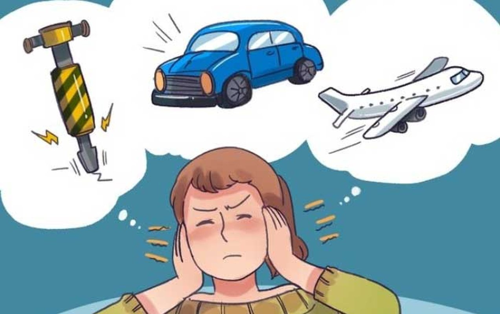
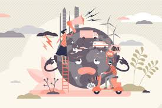

Poluarea fonică - o problemă actuală
Poluarea este prezentă peste tot în zilele noastre, iar în ultimii ani, poluarea fonică a devenit un subiect tot mai important. Străzile sunt din ce în ce mai aglomerate, odată cu creșterea populației și dezvoltarea orașelor, chiar dacă rata natalității în Brașov nu a crescut semnificativ. Transportul public este mai folosit, dar tot insuficient, activitățile industriale s-au intensificat, iar oamenii petrec mai mult timp în oraș, deseori în mod zgomotos. Toate acestea contribuie la creșterea nivelului de zgomot din jurul nostru
Ce este poluarea fonică?
Poluarea, indiferent de tipul ei, are efecte negative asupra vieții noastre. În cazul poluării fonice, atât în Brașov, cât și în alte orașe din România, aceasta a devenit o problemă serioasă. Dar ce înseamnă, de fapt, poluarea fonică? Este vorba despre zgomotul excesiv sau deranjant, care provine din diverse surse și care afectează sănătatea, calitatea vieții și mediul.

Efectele poluării fonice asupra sănătății
Zgomotul constant, de intensitate mare, afectează sistemul nervos, declanșând reacții de stres care pot duce în timp la afecțiuni cronice, cum ar fi hipertensiunea sau bolile cardiovasculare. De asemenea, poate influența negativ funcțiile cognitive, cum ar fi memoria și capacitatea de concentrare. În timpul nopții, poluarea fonică perturbă somnul, cauzând oboseală, insomnie și poate contribui la apariția unor boli precum diabetul sau depresia. La nivel psihic, expunerea continuă la zgomot poate provoca anxietate, stări de iritabilitate sau chiar depresie, afectând relațiile sociale și performanța la școală sau la locul de muncă.
Cum ne putem proteja împotriva poluării fonice?
Pentru a ne proteja de poluarea fonică, putem lua câteva măsuri simple, dar eficiente. De exemplu, acasă putem folosi geamuri termopan sau perdele groase care izolează fonic, iar noaptea putem apela la dopuri de urechi pentru un somn mai liniștit. Când alegem să ne relaxăm, este bine să evităm zonele zgomotoase, de preferat parcurile sau locurile liniștite din natură. De asemenea, putem folosi căști cu funcție de anulare a zgomotului în transportul public sau în alte spații aglomerate. Informarea și conștientizarea pericolelor poluării fonice sunt, de asemenea, pași importanți pentru a ne proteja sănătatea.
Soluții pentru reducerea poluării fonice
Chiar dacă problema poluării este una gravă, atât în România, cât și la nivel global, nu este niciodată prea târziu să luăm măsuri. Reducerea poluării fonice presupune o combinație de soluții: reglementări clare, tehnologii moderne și implicarea tuturor – de la autorități și companii, până la cetățeni. Guvernele trebuie să stabilească limite de zgomot și să le impună prin controale și sancțiuni. În același timp, planificarea orașelor ar trebui să țină cont de protejarea locuințelor față de sursele de zgomot.

Concluzie
În concluzie, dacă acționăm împreună – prin legi, tehnologie și responsabilitate – putem face pași importanți spre un mediu mai liniștit și mai sănătos pentru toți.